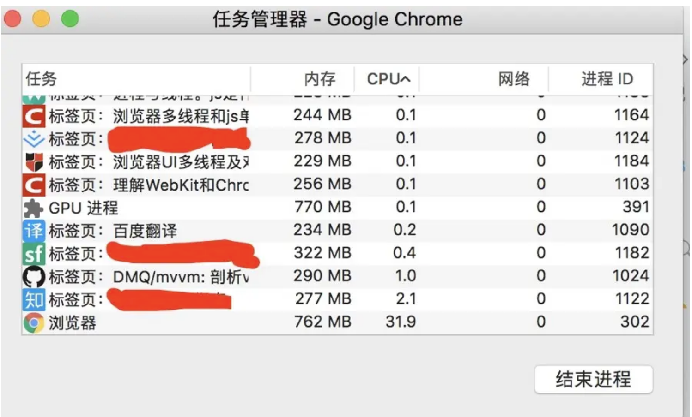
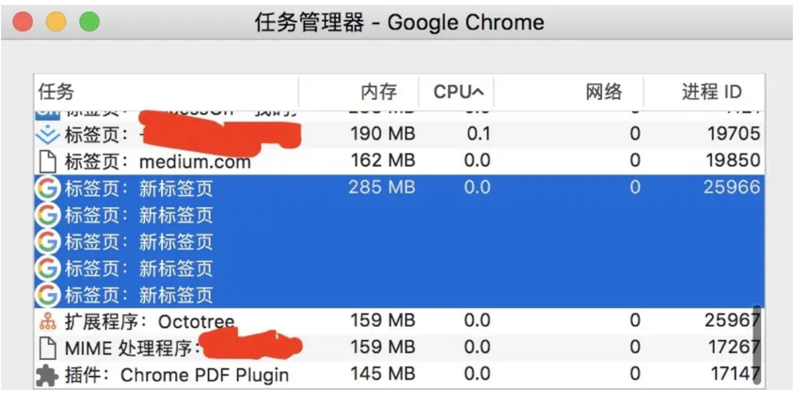
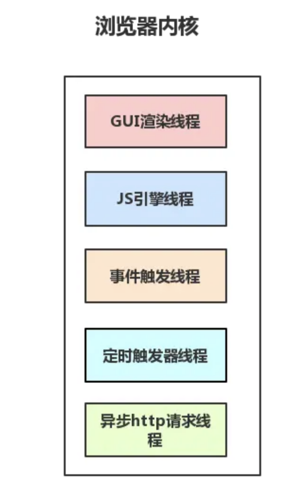
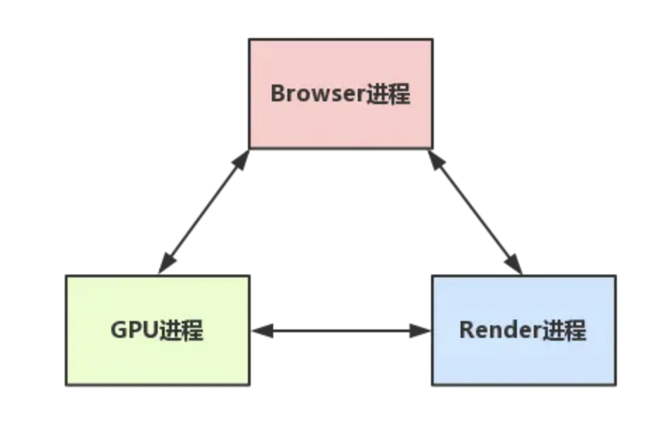
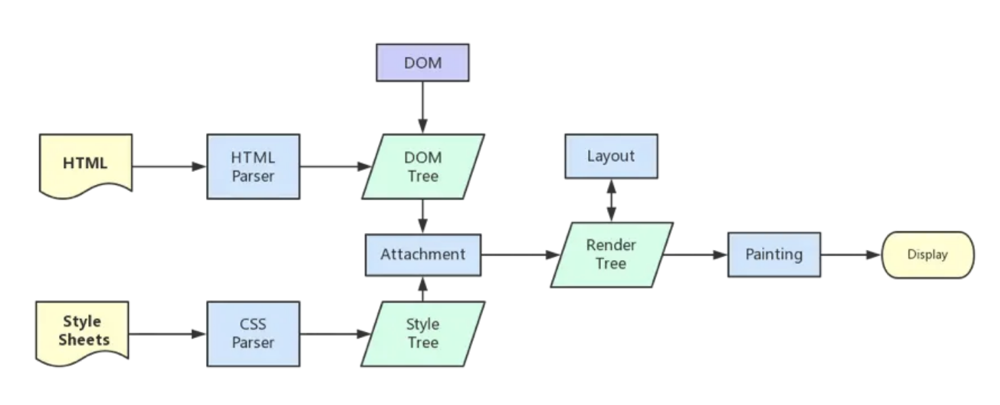
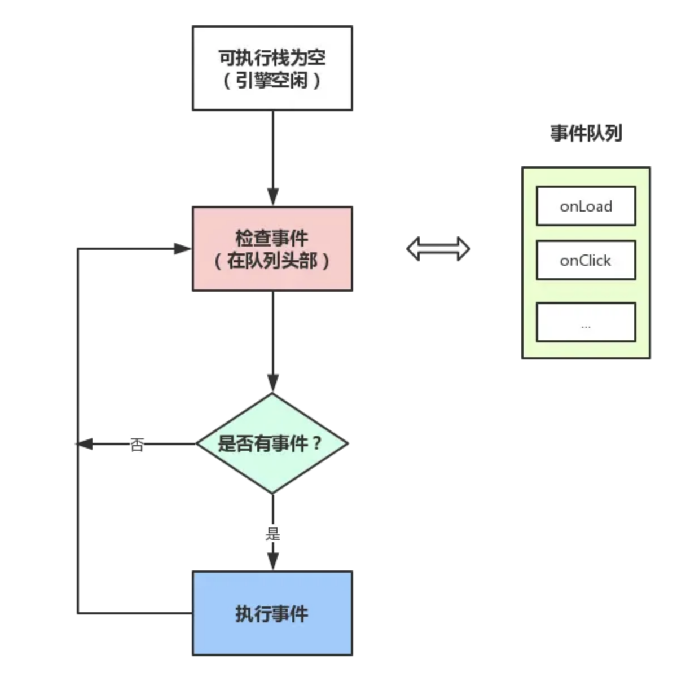
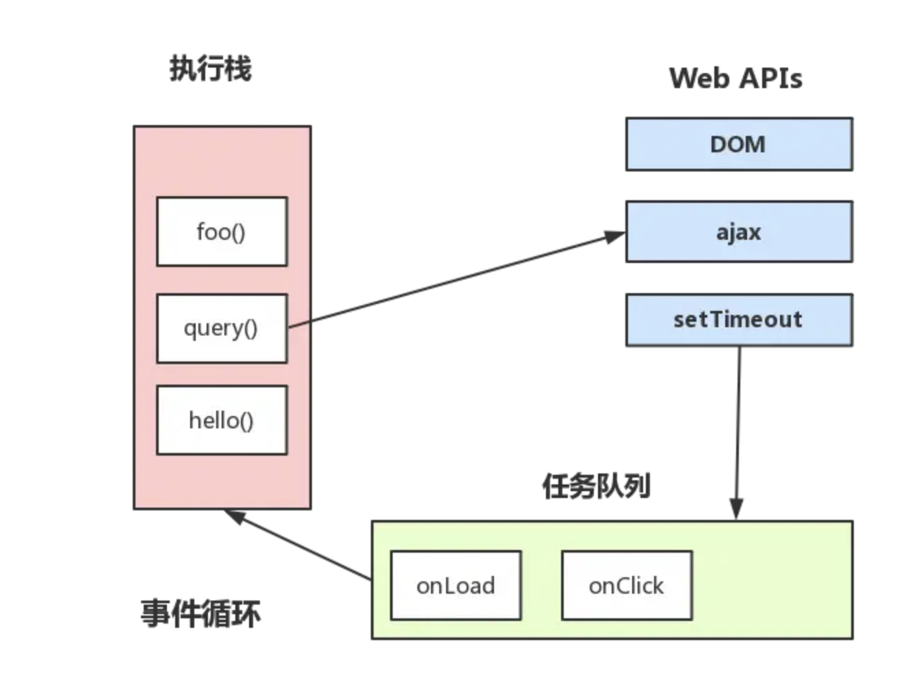
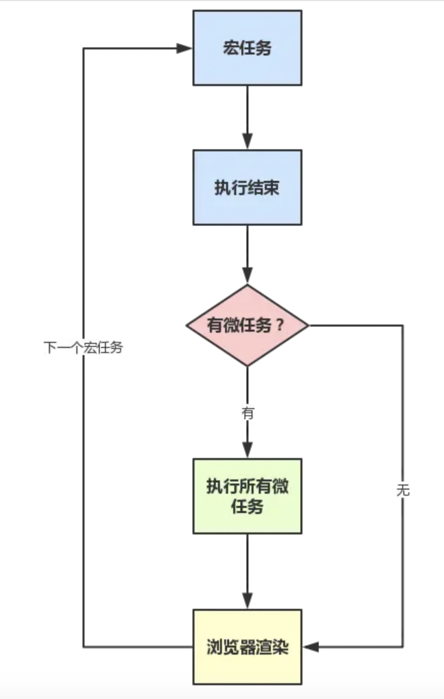

# 从浏览器多进程到JS单线程，JS运行机制最全面的一次梳理
见解有限，如有描述不当之处，请帮忙及时指出，如有错误，会及时修正。
----------超长文+多图预警，需要花费不少时间。----------
如果看完本文后，还对进程线程傻傻分不清，不清楚浏览器多进程、浏览器内核多线程、JS单线程、JS运行机制的区别。那么请回复我，一定是我写的还不够清晰，我来改。。。
----------正文开始----------
最近发现有不少介绍JS单线程运行机制的文章，但是发现很多都仅仅是介绍某一部分的知识，而且各个地方的说法还不统一，容易造成困惑。 因此准备梳理这块知识点，结合已有的认知，基于网上的大量参考资料， 从浏览器多进程到JS单线程，将JS引擎的运行机制系统的梳理一遍。
展现形式：由于是属于系统梳理型，就没有由浅入深了，而是从头到尾的梳理知识体系， 重点是将关键节点的知识点串联起来，而不是仅仅剖析某一部分知识。
内容是：从浏览器进程，再到浏览器内核运行，再到JS引擎单线程，再到JS事件循环机制，从头到尾系统的梳理一遍，摆脱碎片化，形成一个知识体系
目标是：看完这篇文章后，对浏览器多进程，JS单线程，JS事件循环机制这些都能有一定理解， 有一个知识体系骨架，而不是似懂非懂的感觉。
另外，本文适合有一定经验的前端人员，新手请规避，避免受到过多的概念冲击。可以先存起来，有了一定理解后再看，也可以分成多批次观看，避免过度疲劳。
# 大纲
- 区分进程和线程
- 浏览器是多进程的
- 浏览器都包含哪些进程？
- 浏览器多进程的优势
- 重点是浏览器内核（渲染进程）
- Browser进程和浏览器内核（Renderer进程）的通信过程
- 梳理浏览器内核中线程之间的关系
- GUI渲染线程与JS引擎线程互斥
- JS阻塞页面加载
- WebWorker，JS的多线程？
- WebWorker与SharedWorker
- 简单梳理下浏览器渲染流程
- load事件与DOMContentLoaded事件的先后
- css加载是否会阻塞dom树渲染？
- 普通图层和复合图层
- 从Event Loop谈JS的运行机制
- 事件循环机制进一步补充
- 单独说说定时器
- setTimeout而不是setInterval
- 事件循环进阶：macrotask与microtask
- 写在最后的话
# 区分进程和线程
线程和进程区分不清，是很多新手都会犯的错误，没有关系。这很正常。先看看下面这个形象的比喻：
- 进程是一个工厂，工厂有它的独立资源 - 工厂之间相互独立 - 线程是工厂中的工人，多个工人协作完成任务 - 工厂内有一个或多个工人 - 工人之间共享空间
再完善完善概念：
- 工厂的资源 -> 系统分配的内存（独立的一块内存） - 工厂之间的相互独立 -> 进程之间相互独立 - 多个工人协作完成任务 -> 多个线程在进程中协作完成任务 - 工厂内有一个或多个工人 -> 一个进程由一个或多个线程组成 - 工人之间共享空间 -> 同一进程下的各个线程之间共享程序的内存空间（包括代码段、数据集、堆等）
然后再巩固下：
如果是windows电脑中，可以打开任务管理器，可以看到有一个后台进程列表。对，那里就是查看进程的地方，而且可以看到每个进程的内存资源信息以及cpu占有率。

所以，应该更容易理解了：进程是cpu资源分配的最小单位（系统会给它分配内存）
最后，再用较为官方的术语描述一遍：
- 进程是cpu资源分配的最小单位（是能拥有资源和独立运行的最小单位）
- 线程是cpu调度的最小单位（线程是建立在进程的基础上的一次程序运行单位，一个进程中可以有多个线程）
tips
- 不同进程之间也可以通信，不过代价较大
- 现在，一般通用的叫法：单线程与多线程，都是指在一个进程内的单和多。（所以核心还是得属于一个进程才行）
# 浏览器是多进程的
理解了进程与线程了区别后，接下来对浏览器进行一定程度上的认识：（先看下简化理解）
- 浏览器是多进程的
- 浏览器之所以能够运行，是因为系统给它的进程分配了资源（cpu、内存）
- 简单点理解，每打开一个Tab页，就相当于创建了一个独立的浏览器进程。
关于以上几点的验证，请再第一张图：


图中打开了 Chrome浏览器的多个标签页，然后可以在 Chrome的任务管理器中看到有多个进程（分别是每一个Tab页面有一个独立的进程，以及一个主进程）。
感兴趣的可以自行尝试下，如果再多打开一个Tab页，进程正常会+1以上
**注意：**在这里浏览器应该也有自己的优化机制，有时候打开多个tab页后，可以在Chrome任务管理器中看到，有些进程被合并了 （所以每一个Tab标签对应一个进程并不一定是绝对的）
# 浏览器都包含哪些进程？
知道了浏览器是多进程后，再来看看它到底包含哪些进程：（为了简化理解，仅列举主要进程）
- Browser进程：浏览器的主进程（负责协调、主控），只有一个。作用有
- 负责浏览器界面显示，与用户交互。如前进，后退等
- 负责各个页面的管理，创建和销毁其他进程
- 将Renderer进程得到的内存中的Bitmap，绘制到用户界面上
- 网络资源的管理，下载等
- 第三方插件进程：每种类型的插件对应一个进程，仅当使用该插件时才创建
- GPU进程：最多一个，用于3D绘制等
- 浏览器渲染进程（浏览器内核）（Renderer进程，内部是多线程的）：默认每个Tab页面一个进程，互不影响。主要作用为
- 页面渲染，脚本执行，事件处理等
强化记忆：在浏览器中打开一个网页相当于新起了一个进程（进程内有自己的多线程）
当然，浏览器有时会将多个进程合并（譬如打开多个空白标签页后，会发现多个空白标签页被合并成了一个进程），如图


另外，可以通过Chrome的 更多工具 -> 任务管理器自行验证
# 浏览器多进程的优势
相比于单进程浏览器，多进程有如下优点：
- 避免单个page crash影响整个浏览器
- 避免第三方插件crash影响整个浏览器
- 多进程充分利用多核优势
- 方便使用沙盒模型隔离插件等进程，提高浏览器稳定性
简单点理解：如果浏览器是单进程，那么某个Tab页崩溃了，就影响了整个浏览器，体验有多差；同理如果是单进程，插件崩溃了也会影响整个浏览器；而且多进程还有其它的诸多优势。。。
当然，内存等资源消耗也会更大，有点空间换时间的意思。
# 重点是浏览器内核（渲染进程）
重点来了，我们可以看到，上面提到了这么多的进程，那么，对于普通的前端操作来说，最终要的是什么呢？答案是渲染进程
可以这样理解，页面的渲染，JS的执行，事件的循环，都在这个进程内进行。接下来重点分析这个进程
请牢记，浏览器的渲染进程是多线程的（这点如果不理解，请回头看进程和线程的区分）
终于到了线程这个概念了?，好亲切。那么接下来看看它都包含了哪些线程（列举一些主要常驻线程）：
- GUI渲染线程
- 负责渲染浏览器界面，解析HTML，CSS，构建DOM树和RenderObject树，布局和绘制等。
- 当界面需要重绘（Repaint）或由于某种操作引发回流(reflow)时，该线程就会执行
- 注意，GUI渲染线程与JS引擎线程是互斥的，当JS引擎执行时GUI线程会被挂起（相当于被冻结了），GUI更新会被保存在一个队列中等到JS引擎空闲时立即被执行。
- JS引擎线程
- 也称为JS内核，负责处理Javascript脚本程序。（例如V8引擎）
- JS引擎线程负责解析Javascript脚本，运行代码。
- JS引擎一直等待着任务队列中任务的到来，然后加以处理，一个Tab页（renderer进程）中无论什么时候都只有一个JS线程在运行JS程序
- 同样注意，GUI渲染线程与JS引擎线程是互斥的，所以如果JS执行的时间过长，这样就会造成页面的渲染不连贯，导致页面渲染加载阻塞。
- 事件触发线程
- 归属于浏览器而不是JS引擎，用来控制事件循环（可以理解，JS引擎自己都忙不过来，需要浏览器另开线程协助）
- 当JS引擎执行代码块如setTimeOut时（也可来自浏览器内核的其他线程,如鼠标点击、AJAX异步请求等），会将对应任务添加到事件线程中
- 当对应的事件符合触发条件被触发时，该线程会把事件添加到待处理队列的队尾，等待JS引擎的处理
- 注意，由于JS的单线程关系，所以这些待处理队列中的事件都得排队等待JS引擎处理（当JS引擎空闲时才会去执行）
- 定时触发器线程
- 传说中的
setInterval与setTimeout所在线程 - 浏览器定时计数器并不是由JavaScript引擎计数的,（因为JavaScript引擎是单线程的, 如果处于阻塞线程状态就会影响记计时的准确）
- 因此通过单独线程来计时并触发定时（计时完毕后，添加到事件队列中，等待JS引擎空闲后执行）
- 注意，W3C在HTML标准中规定，规定要求setTimeout中低于4ms的时间间隔算为4ms。
- 传说中的
- 异步http请求线程
- 在XMLHttpRequest在连接后是通过浏览器新开一个线程请求
- 将检测到状态变更时，如果设置有回调函数，异步线程就产生状态变更事件，将这个回调再放入事件队列中。再由JavaScript引擎执行。
看到这里，如果觉得累了，可以先休息下，这些概念需要被消化，毕竟后续将提到的事件循环机制就是基于 事件触发线程的，所以如果仅仅是看某个碎片化知识，
可能会有一种似懂非懂的感觉。要完成的梳理一遍才能快速沉淀，不易遗忘。放张图巩固下吧：


再说一点，为什么JS引擎是单线程的？额，这个问题其实应该没有标准答案，譬如，可能仅仅是因为由于多线程的复杂性，譬如多线程操作一般要加锁，因此最初设计时选择了单线程。。。
# Browser进程和浏览器内核（Renderer进程）的通信过程
看到这里，首先，应该对浏览器内的进程和线程都有一定理解了，那么接下来，再谈谈浏览器的Browser进程（控制进程）是如何和内核通信的， 这点也理解后，就可以将这部分的知识串联起来，从头到尾有一个完整的概念。
如果自己打开任务管理器，然后打开一个浏览器，就可以看到：任务管理器中出现了两个进程（一个是主控进程，一个则是打开Tab页的渲染进程）， 然后在这前提下，看下整个的过程：(简化了很多)
- Browser进程收到用户请求，首先需要获取页面内容（譬如通过网络下载资源），随后将该任务通过RendererHost接口传递给Render进程
- Renderer进程的Renderer接口收到消息，简单解释后，交给渲染线程，然后开始渲染
- 渲染线程接收请求，加载网页并渲染网页，这其中可能需要Browser进程获取资源和需要GPU进程来帮助渲染
- 当然可能会有JS线程操作DOM（这样可能会造成回流并重绘）
- 最后Render进程将结果传递给Browser进程
- Browser进程接收到结果并将结果绘制出来
这里绘一张简单的图：（很简化）


看完这一整套流程，应该对浏览器的运作有了一定理解了，这样有了知识架构的基础后，后续就方便往上填充内容。
这块再往深处讲的话就涉及到浏览器内核源码解析了，不属于本文范围。
如果这一块要深挖，建议去读一些浏览器内核源码解析文章，或者可以先看看参考下来源中的第一篇文章，写的不错
# 梳理浏览器内核中线程之间的关系
到了这里，已经对浏览器的运行有了一个整体的概念，接下来，先简单梳理一些概念
# GUI渲染线程与JS引擎线程互斥
由于JavaScript是可操纵DOM的，如果在修改这些元素属性同时渲染界面（即JS线程和UI线程同时运行），那么渲染线程前后获得的元素数据就可能不一致了。
因此为了防止渲染出现不可预期的结果，浏览器设置GUI渲染线程与JS引擎为互斥的关系，当JS引擎执行时GUI线程会被挂起， GUI更新则会被保存在一个队列中等到JS引擎线程空闲时立即被执行。
# JS阻塞页面加载
从上述的互斥关系，可以推导出，JS如果执行时间过长就会阻塞页面。
譬如，假设JS引擎正在进行巨量的计算，此时就算GUI有更新，也会被保存到队列中，等待JS引擎空闲后执行。 然后，由于巨量计算，所以JS引擎很可能很久很久后才能空闲，自然会感觉到巨卡无比。
所以，要尽量避免JS执行时间过长，这样就会造成页面的渲染不连贯，导致页面渲染加载阻塞的感觉。
# WebWorker，JS的多线程？
前文中有提到JS引擎是单线程的，而且JS执行时间过长会阻塞页面，那么JS就真的对cpu密集型计算无能为力么？
所以，后来HTML5中支持了 Web Worker。
MDN的官方解释是：
Web Worker为Web内容在后台线程中运行脚本提供了一种简单的方法。线程可以执行任务而不干扰用户界面
一个worker是使用一个构造函数创建的一个对象(e.g. Worker()) 运行一个命名的JavaScript文件
这个文件包含将在工作线程中运行的代码; workers 运行在另一个全局上下文中,不同于当前的window
因此，使用 window快捷方式获取当前全局的范围 (而不是self) 在一个 Worker 内将返回错误
这样理解下：
- 创建Worker时，JS引擎向浏览器申请开一个子线程（子线程是浏览器开的，完全受主线程控制，而且不能操作DOM）
- JS引擎线程与worker线程间通过特定的方式通信（postMessage API，需要通过序列化对象来与线程交互特定的数据）
所以，如果有非常耗时的工作，请单独开一个Worker线程，这样里面不管如何翻天覆地都不会影响JS引擎主线程， 只待计算出结果后，将结果通信给主线程即可，perfect!
而且注意下，JS引擎是单线程的，这一点的本质仍然未改变，Worker可以理解是浏览器给JS引擎开的外挂，专门用来解决那些大量计算问题。
其它，关于Worker的详解就不是本文的范畴了，因此不再赘述。
# WebWorker与SharedWorker
既然都到了这里，就再提一下 SharedWorker（避免后续将这两个概念搞混）
- WebWorker只属于某个页面，不会和其他页面的Render进程（浏览器内核进程）共享
- 所以Chrome在Render进程中（每一个Tab页就是一个render进程）创建一个新的线程来运行Worker中的JavaScript程序。
- SharedWorker是浏览器所有页面共享的，不能采用与Worker同样的方式实现，因为它不隶属于某个Render进程，可以为多个Render进程共享使用
- 所以Chrome浏览器为SharedWorker单独创建一个进程来运行JavaScript程序，在浏览器中每个相同的JavaScript只存在一个SharedWorker进程，不管它被创建多少次。
看到这里，应该就很容易明白了，本质上就是进程和线程的区别。SharedWorker由独立的进程管理，WebWorker只是属于render进程下的一个线程
# 简单梳理下浏览器渲染流程
本来是直接计划开始谈JS运行机制的，但想了想，既然上述都一直在谈浏览器，直接跳到JS可能再突兀，因此，中间再补充下浏览器的渲染流程（简单版本）
为了简化理解，前期工作直接省略成：（要展开的或完全可以写另一篇超长文）
- 浏览器输入url，浏览器主进程接管，开一个下载线程，
然后进行 http请求（略去DNS查询，IP寻址等等操作），然后等待响应，获取内容，
随后将内容通过RendererHost接口转交给Renderer进程
- 浏览器渲染流程开始 浏览器器内核拿到内容后，渲染大概可以划分成以下几个步骤：
- 解析html建立dom树
- 解析css构建render树（将CSS代码解析成树形的数据结构，然后结合DOM合并成render树）
- 布局render树（Layout/reflow），负责各元素尺寸、位置的计算
- 绘制render树（paint），绘制页面像素信息
- 浏览器会将各层的信息发送给GPU，GPU会将各层合成（composite），显示在屏幕上。
所有详细步骤都已经略去，渲染完毕后就是 load事件了，之后就是自己的JS逻辑处理了
既然略去了一些详细的步骤，那么就提一些可能需要注意的细节把。
这里重绘参考来源中的一张图：（参考来源第一篇）


# load事件与DOMContentLoaded事件的先后
上面提到，渲染完毕后会触发 load事件，那么你能分清楚 load事件与 DOMContentLoaded事件的先后么？
很简单，知道它们的定义就可以了：
- 当 DOMContentLoaded 事件触发时，仅当DOM加载完成，不包括样式表，图片。
(譬如如果有async加载的脚本就不一定完成)
- 当 onload 事件触发时，页面上所有的DOM，样式表，脚本，图片都已经加载完成了。
（渲染完毕了）
所以，顺序是：DOMContentLoaded -> load
# css加载是否会阻塞dom树渲染？
这里说的是头部引入css的情况
首先，我们都知道：css是由单独的下载线程异步下载的。
然后再说下几个现象：
- css加载不会阻塞DOM树解析（异步加载时DOM照常构建）
- 但会阻塞render树渲染（渲染时需等css加载完毕，因为render树需要css信息）
这可能也是浏览器的一种优化机制。
因为你加载css的时候，可能会修改下面DOM节点的样式， 如果css加载不阻塞render树渲染的话，那么当css加载完之后， render树可能又得重新重绘或者回流了，这就造成了一些没有必要的损耗。 所以干脆就先把DOM树的结构先解析完，把可以做的工作做完，然后等你css加载完之后， 在根据最终的样式来渲染render树，这种做法性能方面确实会比较好一点。
# 普通图层和复合图层
渲染步骤中就提到了 composite概念。
可以简单的这样理解，浏览器渲染的图层一般包含两大类：普通图层以及 复合图层
首先，普通文档流内可以理解为一个复合图层（这里称为 默认复合层，里面不管添加多少元素，其实都是在同一个复合图层中）
其次，absolute布局（fixed也一样），虽然可以脱离普通文档流，但它仍然属于 默认复合层。
然后，可以通过 硬件加速的方式，声明一个 新的复合图层，它会单独分配资源
（当然也会脱离普通文档流，这样一来，不管这个复合图层中怎么变化，也不会影响 默认复合层里的回流重绘）
可以简单理解下：GPU中，各个复合图层是单独绘制的，所以互不影响，这也是为什么某些场景硬件加速效果一级棒
可以 Chrome源码调试 -> More Tools -> Rendering -> Layer borders中看到，黄色的就是复合图层信息
如下图。可以验证上述的说法

如何变成复合图层（硬件加速）
将该元素变成一个复合图层，就是传说中的硬件加速技术
- 最常用的方式：
translate3d、translateZ opacity属性/过渡动画（需要动画执行的过程中才会创建合成层，动画没有开始或结束后元素还会回到之前的状态）will-chang属性（这个比较偏僻），一般配合opacity与translate使用（而且经测试，除了上述可以引发硬件加速的属性外，其它属性并不会变成复合层），
作用是提前告诉浏览器要变化，这样浏览器会开始做一些优化工作（这个最好用完后就释放）
<video><iframe><canvas><webgl>等元素- 其它，譬如以前的flash插件
absolute和硬件加速的区别
可以看到，absolute虽然可以脱离普通文档流，但是无法脱离默认复合层。 所以，就算absolute中信息改变时不会改变普通文档流中render树， 但是，浏览器最终绘制时，是整个复合层绘制的，所以absolute中信息的改变，仍然会影响整个复合层的绘制。 （浏览器会重绘它，如果复合层中内容多，absolute带来的绘制信息变化过大，资源消耗是非常严重的）
而硬件加速直接就是在另一个复合层了（另起炉灶），所以它的信息改变不会影响默认复合层 （当然了，内部肯定会影响属于自己的复合层），仅仅是引发最后的合成（输出视图）
复合图层的作用？
一般一个元素开启硬件加速后会变成复合图层，可以独立于普通文档流中，改动后可以避免整个页面重绘，提升性能
但是尽量不要大量使用复合图层，否则由于资源消耗过度，页面反而会变的更卡
硬件加速时请使用index
使用硬件加速时，尽可能的使用index，防止浏览器默认给后续的元素创建复合层渲染
具体的原理时这样的： webkit CSS3中，如果这个元素添加了硬件加速，并且index层级比较低， 那么在这个元素的后面其它元素（层级比这个元素高的，或者相同的，并且releative或absolute属性相同的）， 会默认变为复合层渲染，如果处理不当会极大的影响性能
简单点理解，其实可以认为是一个隐式合成的概念：如果a是一个复合图层，而且b在a上面，那么b也会被隐式转为一个复合图层，这点需要特别注意
另外，这个问题可以在这个地址看到重现（原作者分析的挺到位的，直接上链接）：
http://web.jobbole.com/83575/
# 从Event Loop谈JS的运行机制
到此时，已经是属于浏览器页面初次渲染完毕后的事情，JS引擎的一些运行机制分析。
注意，这里不谈 可执行上下文，VO，scop chain等概念（这些完全可以整理成另一篇文章了），这里主要是结合 Event Loop来谈JS代码是如何执行的。
读这部分的前提是已经知道了JS引擎是单线程，而且这里会用到上文中的几个概念：（如果不是很理解，可以回头温习）
- JS引擎线程
- 事件触发线程
- 定时触发器线程
然后再理解一个概念：
- JS分为同步任务和异步任务
- 同步任务都在主线程上执行，形成一个
执行栈 - 主线程之外，事件触发线程管理着一个
任务队列，只要异步任务有了运行结果，就在任务队列之中放置一个事件。 - 一旦
执行栈中的所有同步任务执行完毕（此时JS引擎空闲），系统就会读取任务队列，将可运行的异步任务添加到可执行栈中，开始执行。
看图：


看到这里，应该就可以理解了：为什么有时候setTimeout推入的事件不能准时执行？因为可能在它推入到事件列表时，主线程还不空闲，正在执行其它代码， 所以自然有误差。
# 事件循环机制进一步补充
这里就直接引用一张图片来协助理解：（参考自Philip Roberts的演讲《Help, I'm stuck in an event-loop》）


上图大致描述就是：
- 主线程运行时会产生执行栈，
栈中的代码调用某些api时，它们会在事件队列中添加各种事件（当满足触发条件后，如ajax请求完毕）
- 而栈中的代码执行完毕，就会读取事件队列中的事件，去执行那些回调
- 如此循环
- 注意，总是要等待栈中的代码执行完毕后才会去读取事件队列中的事件
# 单独说说定时器
上述事件循环机制的核心是：JS引擎线程和事件触发线程
但事件上，里面还有一些隐藏细节，譬如调用 setTimeout后，是如何等待特定时间后才添加到事件队列中的？
是JS引擎检测的么？当然不是了。它是由定时器线程控制（因为JS引擎自己都忙不过来，根本无暇分身）
为什么要单独的定时器线程？因为JavaScript引擎是单线程的, 如果处于阻塞线程状态就会影响记计时的准确，因此很有必要单独开一个线程用来计时。
什么时候会用到定时器线程？当使用 setTimeout或 setInterval时，它需要定时器线程计时，计时完成后就会将特定的事件推入事件队列中。
譬如:
setTimeout(function(){
console.log('hello!');
}, 1000);
这段代码的作用是当 1000毫秒计时完毕后（由定时器线程计时），将回调函数推入事件队列中，等待主线程执行
setTimeout(function(){
console.log('hello!');
}, 0);
console.log('begin');
这段代码的效果是最快的时间内将回调函数推入事件队列中，等待主线程执行
注意：
- 执行结果是：先
begin后hello! - 虽然代码的本意是0毫秒后就推入事件队列，但是W3C在HTML标准中规定，规定要求setTimeout中低于4ms的时间间隔算为4ms。
(不过也有一说是不同浏览器有不同的最小时间设定)
- 就算不等待4ms，就算假设0毫秒就推入事件队列，也会先执行
begin（因为只有可执行栈内空了后才会主动读取事件队列）
# setTimeout而不是setInterval
用setTimeout模拟定期计时和直接用setInterval是有区别的。
因为每次setTimeout计时到后就会去执行，然后执行一段时间后才会继续setTimeout，中间就多了误差 （误差多少与代码执行时间有关）
而setInterval则是每次都精确的隔一段时间推入一个事件 （但是，事件的实际执行时间不一定就准确，还有可能是这个事件还没执行完毕，下一个事件就来了）
而且setInterval有一些比较致命的问题就是：
- 累计效应（上面提到的），如果setInterval代码在（setInterval）再次添加到队列之前还没有完成执行，
就会导致定时器代码连续运行好几次，而之间没有间隔。 就算正常间隔执行，多个setInterval的代码执行时间可能会比预期小（因为代码执行需要一定时间）
- ~譬如像iOS的webview,或者Safari等浏览器中都有一个特点，在滚动的时候是不执行JS的，如果使用了setInterval，会发现在滚动结束后会执行多次由于滚动不执行JS积攒回调，如果回调执行时间过长,就会非常容器造成卡顿问题和一些不可知的错误~（这一块后续有补充，setInterval自带的优化，不会重复添加回调）
- 而且把浏览器最小化显示等操作时，setInterval并不是不执行程序，
它会把setInterval的回调函数放在队列中，等浏览器窗口再次打开时，一瞬间全部执行时
所以，鉴于这么多但问题，目前一般认为的最佳方案是：用setTimeout模拟setInterval，或者特殊场合直接用requestAnimationFrame
补充：JS高程中有提到，JS引擎会对setInterval进行优化，如果当前事件队列中有setInterval的回调，不会重复添加。不过，仍然是有很多问题。。。
# 事件循环进阶：macrotask与microtask
这段参考了参考来源中的第2篇文章（英文版的），（加了下自己的理解重新描述了下）， 强烈推荐有英文基础的同学直接观看原文，作者描述的很清晰，示例也很不错，如下：
https://jakearchibald.com/2015/tasks-microtasks-queues-and-schedules/
上文中将JS事件循环机制梳理了一遍，在ES5的情况是够用了，但是在ES6盛行的现在，仍然会遇到一些问题，譬如下面这题：
console.log('script start');
setTimeout(function() {
console.log('setTimeout');
}, 0);
Promise.resolve().then(function() {
console.log('promise1');
}).then(function() {
console.log('promise2');
});
console.log('script end');
嗯哼，它的正确执行顺序是这样子的：
script start
script end
promise1
promise2
setTimeout 为什么呢？因为Promise里有了一个一个新的概念：microtask
或者，进一步，JS中分为两种任务类型：macrotask和 microtask，在ECMAScript中，microtask称为 jobs，macrotask可称为 task
它们的定义？区别？简单点可以按如下理解：
- macrotask（又称之为宏任务），可以理解是每次执行栈执行的代码就是一个宏任务（包括每次从事件队列中获取一个事件回调并放到执行栈中执行）
- 每一个task会从头到尾将这个任务执行完毕，不会执行其它
- 浏览器为了能够使得JS内部task与DOM任务能够有序的执行，会在一个task执行结束后，在下一个 task 执行开始前，对页面进行重新渲染
（`task->渲染->task->...`）
- microtask（又称为微任务），可以理解是在当前 task 执行结束后立即执行的任务
- 也就是说，在当前task任务后，下一个task之前，在渲染之前
- 所以它的响应速度相比setTimeout（setTimeout是task）会更快，因为无需等渲染
- 也就是说，在某一个macrotask执行完后，就会将在它执行期间产生的所有microtask都执行完毕（在渲染前）
分别很么样的场景会形成macrotask和microtask呢？
- macrotask：主代码块，setTimeout，setInterval等（可以看到，事件队列中的每一个事件都是一个macrotask）
- microtask：Promise，process.nextTick等
补充：在node环境下，process.nextTick的优先级高于Promise，也就是可以简单理解为：在宏任务结束后会先执行微任务队列中的nextTickQueue部分，然后才会执行微任务中的Promise部分。
参考：https://segmentfault.com/q/1010000011914016
再根据线程来理解下：
- macrotask中的事件都是放在一个事件队列中的，而这个队列由事件触发线程维护
- microtask中的所有微任务都是添加到微任务队列（Job Queues）中，等待当前macrotask执行完毕后执行，而这个队列由JS引擎线程维护
（这点由自己理解+推测得出，因为它是在主线程下无缝执行的）
所以，总结下运行机制：
- 执行一个宏任务（栈中没有就从事件队列中获取）
- 执行过程中如果遇到微任务，就将它添加到微任务的任务队列中
- 宏任务执行完毕后，立即执行当前微任务队列中的所有微任务（依次执行）
- 当前宏任务执行完毕，开始检查渲染，然后GUI线程接管渲染
- 渲染完毕后，JS线程继续接管，开始下一个宏任务（从事件队列中获取）
如图：


另外，请注意下 Promise的 polyfill与官方版本的区别：
- 官方版本中，是标准的microtask形式
- polyfill，一般都是通过setTimeout模拟的，所以是macrotask形式
- 请特别注意这两点区别
注意，有一些浏览器执行结果不一样（因为它们可能把microtask当成macrotask来执行了）， 但是为了简单，这里不描述一些不标准的浏览器下的场景（但记住，有些浏览器可能并不标准）
20180126补充：使用MutationObserver实现microtask
MutationObserver可以用来实现microtask （它属于microtask，优先级小于Promise， 一般是Promise不支持时才会这样做）
它是HTML5中的新特性，作用是：监听一个DOM变动， 当DOM对象树发生任何变动时，Mutation Observer会得到通知
像以前的Vue源码中就是利用它来模拟nextTick的， 具体原理是，创建一个TextNode并监听内容变化， 然后要nextTick的时候去改一下这个节点的文本内容， 如下：（Vue的源码，未修改）
var counter = 1
var observer = new MutationObserver(nextTickHandler)
var textNode = document.createTextNode(String(counter))
observer.observe(textNode, {
characterData: true
})
timerFunc = () => {
counter = (counter + 1) % 2
textNode.data = String(counter)
}
对应Vue源码链接
不过，现在的Vue（2.5+）的nextTick实现移除了MutationObserver的方式（据说是兼容性原因）， 取而代之的是使用MessageChannel （当然，默认情况仍然是Promise，不支持才兼容的）。
MessageChannel属于宏任务，优先级是：MessageChannel->setTimeout，
所以Vue（2.5+）内部的nextTick与2.4及之前的实现是不一样的，需要注意下。
这里不展开，可以看下https://juejin.im/post/5a1af88f5188254a701ec230
文章来源：https://segmentfault.com/a/1190000012925872